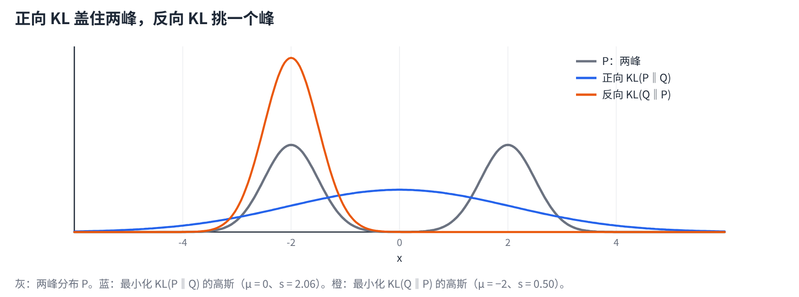
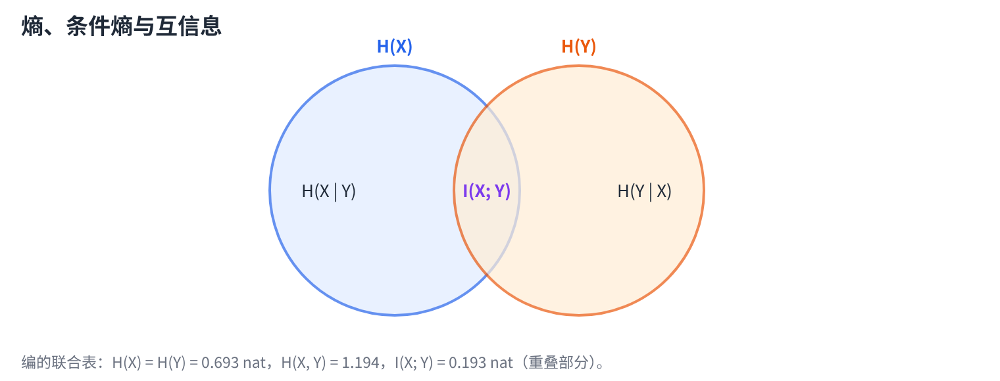
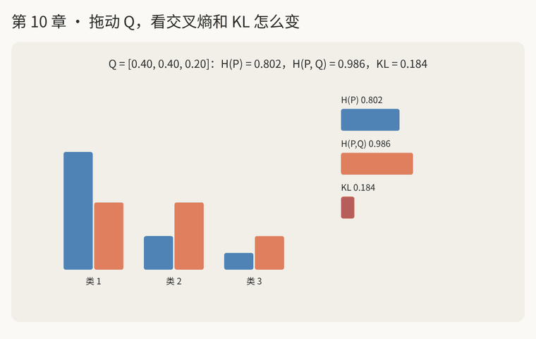

第 10 章 · 信息论：熵、交叉熵、KL 和互信息
本地运行
git clone https://github.com/wikieden/math-and-eval-stats
cd math-and-eval-stats/code/notebooks
pip install jupyterlab torch numpy
jupyter lab ch10_information_kl.ipynb也可以下载后直接用 VS Code 打开 .ipynb 运行。需要 GPU 的章节在 Colab 里选「代码执行程序 → 更改运行时类型 → GPU」。
本章回答：训练分类器、语言模型为什么都用交叉熵当 loss？KL 散度为什么"不是距离"，正向 KL 和反向 KL 拟合出来的结果为什么完全不同？互信息又在量什么？
讲解日期：2026-11-25 · 上一章：第 9 章 高斯分布 · 下一章：第 11 章 线代一
对应原文：MMLmaterials/text/books/mml-book.txt§6.4 KL 段 L11076–L11085；交叉熵 loss 的来历见《超越 Transformer》第 1 章
本章缩写：H(P) = entropy（熵）；H(P, Q) = cross entropy（交叉熵）；KL = Kullback–Leibler divergence（两位统计学家的姓 / 散度：两个分布差多远）；I(X; Y) = mutual information（互信息）；nat = natural unit（以 e 为底的信息单位）；bit = binary digit（比特：以 2 为底）；NLL = Negative Log-Likelihood（负对数似然）。全部缩写见 附录 · 缩写与术语表
讲解
第一步：熵：平均有多意外（2026-11-25）
类比：猜一个人在想什么。 如果他总想同一件事，你一猜就中，没有意外；如果他想什么都有可能，你每次都很意外。熵量的就是"平均意外程度"。
一个结果的"意外程度"是 \(-\log p\)：概率越小越意外。熵是它的平均：
例子：
| 分布 | 熵 |
|---|---|
| 公平硬币 [0.5, 0.5] | 1.000 比特 |
| 9:1 的硬币 [0.9, 0.1] | 0.469 比特 |
| P = [0.7, 0.2, 0.1] | 0.8018 nat |
均匀分布熵最大；越集中熵越小。以 2 为底的单位叫比特，以 e 为底叫 nat，1 比特 = ln 2 ≈ 0.693 nat。
一句话：熵 = 平均意外程度 −Σp log p；越平均越大，越集中越小。
第二步：交叉熵 = 负对数似然（2026-11-25）
类比：拿上海的地图在北京找路。 用为 Q 设计的编码去编码真实来自 P 的数据，平均要花的长度就是交叉熵；Q 和 P 越不像，花得越多。
为什么分类器用它当 loss：训练集上，"真实分布"P 就是标签的经验分布（每个样本把概率 1 放在真标签上），交叉熵就变成
正是平均负对数似然（第 8 章的 MLE）。
例子：
- P = [0.7, 0.2, 0.1]，Q = [0.4, 0.4, 0.2]：H(P, Q) = 0.9856 nat，比 H(P) = 0.8018 多 0.1838；
- 10 个样本，标签 7 个类 0、2 个类 1、1 个类 2（经验分布正好是 P），模型都预测 [0.7, 0.2, 0.1]：平均 NLL = 0.8018 = H(P)。模型预测等于真实分布时，交叉熵降到最低，等于熵。
补基础：语言模型的交叉熵 loss 从零讲起，见《超越 Transformer》第 1 章。
一句话：交叉熵 −Σp log q ≥ 熵；P 是标签的经验分布时，它就是平均负对数似然。
第三步：KL 散度：多花的那部分，而且不对称（2026-11-25）
公式（MML L11076–L11085）：
等号当且仅当 P = Q。所以最小化交叉熵 = 最小化 KL（H(P) 和模型无关）。
不对称：
| 值 | |
|---|---|
| KL(P‖Q) | 0.1838 |
| KL(Q‖P) | 0.1920 |
KL 不满足对称性、也不满足三角不等式，所以不是"距离"，只叫"散度"（MML L11079）。
一句话：KL = 交叉熵 − 熵 ≥ 0，P = Q 时为 0；不对称，不是距离。
第四步：正向 KL 盖住全部，反向 KL 只挑一个峰（2026-11-25）
类比：用一张毯子盖两个相距很远的人。 要求"每个人都盖到"（正向），毯子只好铺得又宽又大，中间的空地也盖上了；要求"毯子下面都得有人"（反向），毯子只能盖住其中一个人。
用一个高斯 Q = N(μ, s²) 去拟合两峰分布 P = 0.5·N(−2, 0.5²) + 0.5·N(2, 0.5²)：
| 最小化 | 结果 | 为什么 |
|---|---|---|
| 正向 KL(P‖Q) | μ = 0.00，s = 2.06 | P 有密度的地方 Q 不能是 0（否则 log(p/q) 爆掉）：要盖住两个峰 |
| 反向 KL(Q‖P) | μ = −2.00，s = 0.50 | Q 有密度的地方 P 不能是 0：Q 不敢放在两峰中间，只好挑一个峰 |

图 10-1 · 灰色是两峰分布；蓝色是正向 KL 的拟合（宽、居中），橙色是反向 KL 的拟合（窄、贴着一个峰）在哪见过：MLE / 交叉熵训练是正向 KL（mass-covering：盖住所有数据，可能"糊"）；变分推断的 ELBO 里是反向 KL（mode-seeking：只抓一个峰，可能漏）。第 17 章的 ELBO、第 51 章 RLHF 的 KL 正则都会用到这个区别。
一句话：正向 KL 要求盖住 P 的所有地方，结果宽而居中；反向 KL 要求不越界，结果贴住一个峰。
第五步：互信息：知道一个，另一个少了多少不确定（2026-11-25）
两者独立时 I = 0；一个完全决定另一个时 I = H(X)。
例子（编的联合分布）：
| Y = 0 | Y = 1 | |
|---|---|---|
| X = 0 | 0.4 | 0.1 |
| X = 1 | 0.1 | 0.4 |
I(X; Y) = 0.1927 nat = 0.2781 比特：X、Y 各自都有 1 比特的不确定性，知道一个只能消掉另一个的 28%。

图 10-2 · 两个圆分别是 H(X)、H(Y)，重叠部分是互信息，合起来是联合熵 H(X, Y)在哪见过：对比学习的 InfoNCE 是互信息的下界（第 62 章）；特征选择里"这个特征对标签提供多少信息"。
场景代码：PyTorch 里交叉熵和 KL 的写法（真实库的写法；本书环境没装 torch，没跑过）：
import torch.nn.functional as F
loss = F.cross_entropy(logits, labels) # 内部是 log_softmax + NLL：平均 −log q(y)
kl = F.kl_div(q_log_probs, p_probs, reduction="sum") # 注意参数顺序：算的是 KL(P‖Q)，第一个参数要传 log Q
一句话：互信息 = H(X) + H(Y) − H(X, Y)，独立时为 0；InfoNCE 等对比损失在估它的下界。
动画演示：拖动 Q，看交叉熵和 KL 怎么变

可交互版：animations/10-information-kl.html（滑块调 Q 的三个概率；下拉切换"三类分布 / 拟合两峰"）。
怎么看：
- 三类分布：蓝柱是 P，橙柱是 Q；右边三根条是 H(P)、H(P, Q)、KL，KL 正好是两者之差（第一到三步）；
- 把 Q 拖到和 P 一样：KL 变成 0，交叉熵降到熵（第二步）；
- 拟合两峰：高斯的 μ、s 两个滑块；右上角同时显示正向和反向 KL，找到各自的最小点（第四步）。
练习与作答记录
题 1（第一步 熵）：一个四面骰子，四个面概率都是 1/4。熵是多少比特？如果一面的概率是 1、其他是 0 呢？
作答：（待作答）
题 2（第二、三步）：真实分布 P = [0.5, 0.5]，模型 Q = [0.9, 0.1]。算 H(P, Q) 和 KL(P‖Q)（用 nat，保留 3 位）。
作答：（待作答）
题 3（第四步）：一个动作分布有两种都对的做法（绕左、绕右）。用 MSE 回归（相当于单个高斯 + 正向 KL）学这个分布，会得到什么样的动作？为什么扩散 / flow 策略不会有这个问题？
作答：（待作答）
口诀
熵是平均意外，越平越大越尖越小；
交叉熵用错的地图走路，就是负对数似然；
KL 是多走的冤枉路，不对称不是距离；
正向盖全、反向挑峰；互信息是重叠的那一块。
本章复习卡片
ST46（熵、交叉熵、KL 的关系：H(P, Q) = H(P) + KL）、ST47（正向 / 反向 KL 的行为差别）、ST48（互信息的定义）。练习做完后，按答错、卡住的地方补上。
附录 · 延伸阅读
留给以后深入学习用，不影响本章主线。★ 是建议先读的。
推荐阅读
| 读什么 | 读哪里 | 读它为了什么 |
|---|---|---|
| ★ MML | §6.4 L11070–L11090 | KL 的定义和"不是度量"的说明 |
| ★ 《超越 Transformer》第 1 章 | 全章 | 语言模型的交叉熵 loss 从零讲起 |
| Cover & Thomas《Elements of Information Theory》 | 第 2 章（本地未归档） | 熵、互信息、KL 的标准教材 |
| 《从零读懂扩散模型》第 2 章 VAE | 第三步 | 高斯之间 KL 的闭式在 VAE loss 里怎么用 |
数学原理
- KL ≥ 0（Gibbs 不等式）：\(-D_{KL} = \sum p\log(q/p) \le \log\sum p\cdot(q/p) = \log 1 = 0\)，用的是 Jensen 不等式（log 是凹函数）。
- 正向 KL 的"零强迫"：\(p(x) > 0\) 而 \(q(x) \to 0\) 时 \(p\log(p/q) \to \infty\)，所以正向 KL 逼 Q 在 P 的支撑上处处非零；反向 KL 反过来逼 Q 在 P 为零的地方也为零。
- 互信息的 KL 形式：\(I(X;Y) = D_{KL}(P_{XY}\|P_XP_Y)\)，量的是"联合分布离独立有多远"，所以一定 ≥ 0。
公式清单
| 公式 | 意思 |
|---|---|
| \(H(P) = -\sum p\log p\) | 熵 |
| \(H(P, Q) = -\sum p\log q\) | 交叉熵 |
| \(D_{KL}(P\|Q) = H(P, Q) - H(P) \ge 0\) | KL |
| \(-\frac1n\sum\log q(y_i)\) | 分类的交叉熵 loss = 平均 NLL |
| \(I(X;Y) = H(X) + H(Y) - H(X,Y)\) | 互信息 |
代码对照：把本章的数字用代码算一遍
代码在仓库本地
math-and-eval-stats/solutions/chapter-code/ch10_information.py，配套测试tests/test_ch10.py：
bash cd math-and-eval-stats/solutions/chapter-code uv run python ch10_information.py uv run pytest tests/test_ch10.py
讲义 ↔ 代码：
| 讲义 | 公式 | 写法 | 跑出来 |
|---|---|---|---|
| 第一步 熵 | −Σp log p | entropy([0.9, 0.1], 2) |
0.469 比特 |
| 第二步 交叉熵 | −Σp log q | cross_entropy(P, Q) |
0.9856 |
| 第二步 NLL | 平均 −log q(y) | nll_of_labels(probs, labels) |
0.8018 |
| 第三步 KL | H(P,Q) − H(P) | kl(P, Q)、kl(Q, P) |
0.1838、0.1920 |
| 第四步 拟合 | 网格搜索 | fit_gaussian("forward" / "reverse") |
(0, 2.06) / (−2, 0.50) |
| 第五步 互信息 | H(X)+H(Y)−H(X,Y) | mutual_information(JOINT) |
0.1927 |
关键几行：
p = p[p > 0] # 0·log 0 按 0 算，先去掉
h = -(p * np.log(p)).sum() # 熵
ce = -(p[m] * np.log(q[m])).sum() # 交叉熵（只在 p > 0 的位置求和）
val = (p * np.log(p / q)).sum() * dx # 连续分布的 KL：格点上求和乘格宽
代码里才看得到的 3 件事：
- 0·log 0 = 0：直接算会得到 nan，要先把 p = 0 的项去掉。
- 连续分布的 KL 用格点近似：在 [−6, 6] 上取 2401 个点，求和乘格宽；两头加 1e-300 防止 log 0。
- 反向 KL 的最优解有两个（μ = −2 或 +2，对称）：网格搜索从左往右找，先碰到的是 −2。
自己改一改（不影响练习答案）：
- 把两峰的间距从 4 改成 1（两峰重叠），正向和反向 KL 的拟合结果还差那么多吗？
- 把
JOINT改成 [[0.25, 0.25], [0.25, 0.25]]，互信息是多少？